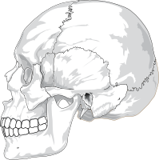
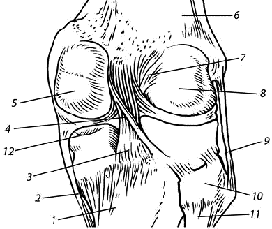

Глава 8. Соединение костей
Первоначальной формой соединения костей (у низших позвоночных, живущих в воде) являлось сращение их при помощи соединительной или (позднее) хрящевой ткани. Однако такой сплошной способ соединения костей ограничивает объем движений.
С образованием костных рычагов движения в промежуточной между костями ткани вследствие рассасывания последней стали появляться щели и полости, в результате чего возник новый вид соединения костей – прерывный, сочленение. Кости стали не только соединяться, но и сочленяться, образовались суставы, позволившие костным рычагам производить обширные движения, необходимые животным, особенно для наземного существования.
Таким образом, в процессе филогенеза развилось 2 вида соединения костей: первоначальный – сплошной с ограниченным размахом движений и более поздний – прерывный, позволивший производить обширные движения. Отражая этот филогенетический процесс приспособления животных к окружающей среде при помощи движения в суставах, и в эмбриогенезе человека развитие соединений костей проходит эти 2 стадии. Вначале зачатки скелета непрерывно связаны между собой прослойками мезенхимы.
Последняя превращается в соединительную ткань, из которой образуется аппарат, связывающий кости. Если участки соединительной ткани, расположенные между костями, окажутся сплошными, то получится сплошное непрерывное соединение костей – сращение, иди синартроз. Если внутри них путем рассасывания соединительной ткани образуется полость, то возникает другой вид соединения – полостной, или прерывный, – диартроз.
Таким образом, по развитию, строению и функции все соединения костей можно разделить на 2 большие группы:
1. Непрерывные соединения – синартрозы (BNA) – более ранние по развитию, неподвижные или малоподвижные по функции.
2. Прерывные соединения – диартрозы (BNA) – более поздние по развитию и более подвижные по функции.
Между этими формами существует переходная – от непрерывных к прерывным или обратно. Она характеризуется наличием небольшой щели, не имеющей строения настоящей суставной полости, вследствие чего такую форму называют полусуставом – симфиз, symphysis (BNA).
Непрерывные соединения костей – синартрозы
Как отмечалось, скелет в своем развитии проходит 3 стадии: соединительнотканную, хрящевую и костную. Так как переход из одной стадии в другую связан также и с изменением ткани, находящейся в промежутке между костями, то соединения костей в своем развитии проходят те же 3 фазы, вследствие чего различаются 3 вида синартрозов:
I. Если в промежутке между костями после рождения остается соединительная ткань, то кости оказываются соединенными посредством соединительной ткани – articulationes fibrosae (fibra, лат. – волокно), s. syndesmosis (syn – с, desme – связка), синдесмоз.
II. Если в промежутке между костями соединительная ткань переходит в хрящевую, которая остается после рождения, то кости оказываются соединенными посредством хрящевой ткани – articulationes cartilagineae (cartilago, лат. – хрящ), s. synchondrosis (chondros,греч. – хрящ), синхондроз.
II. Наконец, если в промежутке между костями соединительная ткань переходит в костную (при десмальном остеогенезе) или сначала в хрящевую, а затем в костную (при хондральном остеогенезе), то кости оказываются соединенными посредством костной ткани – синостоз (synostosis) (BNA).
Характер соединения костей не является неизменным в течение жизни одного индивидуума. Соответственно 3 стадиям окостенения синдесмозы могут переходить в синхондрозы и синостозы. Последние являются завершающей фазой развития скелета.
Синдесмоз, articulatio fibrosa, есть непрерывное соединение костей посредством соединительной ткани.
1. Если соединительная ткань заполняет большой промежуток между костями, то такое соединение приобретает вид межкостных перепонок, membrana interossea, например между костями предплечья или голени.
2. Если промежуточная соединительная ткань приобретает строение волокнистых пучков, то получаются фиброзные связки, ligamenta (связки позвоночногосто лба). В некоторых местах (например, между дугами позвонков) связки состоят из эластической соединительной ткани (synelastosis – BNA); они имеют желтоватую окраску (ligg. flava).
3. Когда промежуточная соединительная ткань приобретает характер тонкой прослойки между костями черепа, то получаются швы, suturae.
По форме соединяющихся костных краев различают следующие швы:
а) зубчатый, sutura serrata, когда зубцы на краю одной кости входят в промежутки между зубцами другой (между большинством костей свода черепа);
б) чешуйчатый, sutura squamosa, когда край одной кости накладывается на край другой (между краями височной и теменной костей);
в) плоский, sutura plana, – прилегание незазубренных краев (между костями лицевого черепа).

Рис 8.1 Соединение черепа человека (синартрозы)
Синхондроз, articulatio cartilaginea, есть непрерывное соединение костей посредством хрящевой ткани и вследствие физических свойств хряща является упругим соединением. Движения при синхондрозе невелики и имеют пружинящий характер. Они зависят от толщины хрящевой прослойки: чем она толще, тем подвижность больше.
По свойству хрящевой ткани (гиалиновая или фиброзная) различают:
1) синхондроз гиалиновый, например между I ребром и грудиной;
2) синхондроз волокнистый.
Последний возникает там, где сказывается большое сопротивление механическим воздействиям, например между телами позвонков. Здесь волокнистые синхондрозы в силу своей упругости играют роль буферов, смягчая толчки и сотрясения.
По длительности своего существования синхондрозы бывают:
1. Временные – существуют только до определенного возраста, после чего заменяются синостозами, например синхондрозы между эпифизом и метафизом или между тремя костями пояса нижней конечности, сливающимися в единую тазовую кость. Временные синхондрозы представляют вторую фазу развития скелета.
2. Постоянные – существуют в течение всей жизни, например синхондрозы между пирамидой височной кости и клиновидной костью, между пирамидой и затылочной костью.
Если в центре синхондроза образуется узкая щель, не имеющая характера настоящей суставной полости с суставными поверхностями и капсулой, то такое соединение становится переходным от непрерывных к прерывным – к суставам и называется симфизом, symphysis, например лобковый симфиз, symphysis pubica. Симфиз может образоваться и в результате обратного перехода от прерывных к непрерывным соединениям в результате редукции суставов, например у некоторых позвоночных между телами ряда позвонков от суставной полости остается щель в discus intervertebralis.
Прерывные соединения костей – суставы, диартрозы
Сустав представляет прерывное, полостное, подвижное соединение, или сочленение, articulatio synovialis (греч. arthron – сустав, отсюда arthritis – воспаление сустава). В каждом суставе различают суставные поверхности сочленяющихся костей, суставную капсулу, окружающую в форме муфты сочленовные концы костей, и суставную полость, находящуюся внутри капсулы между костями.

Рис 8.2 Коленный сустав (правый): 1 – большеберцовая кость; 2 – большеберцовая коллатеральная связка; 3 – задняя крестообразная связка; 4 – медиальный мениск; 5 – медиальный мыщелок бедренной кости; 6 – бедренная кость; 7 – передняя крестообразная связка; 8 – латеральный мыщелок бедренной кости; 9 – малоберцовая коллатеральная связка; 10 – головка малоберцовой кости; 11 – малоберцовая кость; 12 – гиалиновый хрящ
1. Суставные поверхности, fades articulares, покрыты суставным хрящом, cartilago articularis, гиалиновым, реже волокнистым, толщиной 0,2 – 0,5 мм. Вследствие постоянного трения суставной хрящ приобретает гладкость, облегчающую скольжение суставных поверхностей, а вследствие эластичности хряща он смягчает толчки и служит буфером. Суставные поверхности обычно более или менее соответствуют друг другу (конгруэнтны). Так, если суставная поверхность одной кости выпуклая (так называемая суставная головка), то поверхность другой кости соответствующим образом вогнута (суставная впадина).
2. Суставная капсула, capsula articularis, окружая герметически суставную полость, прирастает к сочленяющимся костям по краю их суставных поверхностей или же несколько отступя от них.
Она состоит из наружной фиброзной мембраны, membrana fibrosa, и внутренней синовиаль ной, membrana synovialis. Синовиальная мембрана покрыта на стороне, обращенной к суставной полости, слоем эндотелиальных клеток, вследствие чего имеет гладкий и блестящий вид. Она выделяет в полость сустава липкую прозрачную синовиальную жидкость – синовию, synovia, наличие которой уменьшает трение суставных поверхностей.
Синовиальная мембрана оканчивается по краям суставных хрящей. Она часто образует небольшие отростки, называемые синовиальными ворсинками, villi synoviales. Кроме того, местами она образует то большей, то меньшей величины синовиаль ные складки, plicae synovidles, вдвигающиеся в полость сустава. Иногда синовиальные складки содержат значительное количество врастающего в них снаружи жира, тогда получаются так называемые жировые складки, plicae adiposae, примером которых могут служить plicae alares коленного сустава.
Иногда в утонченных местах капсулы образуются мешкообразные выпячивания или вывороты синовиальной мембраны – синовиальные сумки, bursae synoviales, располагающиеся вокруг сухожилий или под мышцами, лежащими вблизи сустава. Будучи выполнены синовией, эти синовиальные сумки уменьшают трение сухожилий и мышц при движениях.
3. Суставная полость, сavitas articularis, представляет герметически закрытое щелевидное пространство, ограниченное суставными поверх ностями и синовиальной мембраной. В норме оно не является свободной полостью, а выполнено синовиальной жидкостью, которая увлажняет и смазывает суставные поверхности, уменьшая трение между ними. Кроме того, синовия играет роль в обмене жидкости и в укреплении сустава благодаря сцеплению поверхностей.
Она служит также буфером, смягчающим сдавление и толчки суставных поверхностей, так как движение в суставах – это не только скольжение, но и расхождение суставных поверхностей. Между суставными поверхностями имеется отрицательное давление (меньше атмосферного). Поэтому их расхождению препятствует атмосферное давление. (Этим объясняется чувствительность суставов к колебаниям атмосферного давления при некоторых заболеваниях их, из–за чего такие больные могут предсказывать ухудшение погоды.)
При повреждении суставной капсулы воздух попадает в полость сустава, вследствие чего суставные поверхности немедленно расходятся. В обычных условиях расхождению суставных поверхностей, кроме отрицательного давления в полости, препятствуют также связки (внутри– и внесуставные) и мышцы с заложенными в толще их сухожилий сесамовидными костями. Связки и сухожилия мышц составляют вспомогательный укрепляющий аппарат сустава.
Биомеханика суставов
В организме живого человека суставы играют тройную роль:
1) они содействуют сохранению положения тела;
2) участвуют в перемещении частей тела в отношении друг друга;
3) являются органами локомоции (передвижения) тела в пространстве.r
Так как в процессе эволюции условия для мышечной деятельности были различными, то и получились сочленения различных формы и функции. По форме суставные поверхности могут рассматриваться как отрезки геометрических тел вращения: цилиндра, вращающегося вокруг одной оси; эллипса, вращающегося вокруг двух осей, и шара – вокруг трех и более осей.
В суставах движения совершаются вокруг трех главных осей. Различают следующие виды движений в суставах:
1. Движение вокруг фронтальной (горизонтальной) оси – сгибание (flexio), т. е. уменьшение угла между сочленяющимися костями, и разгибание (extensio), т. е. увеличение этого угла.
2. Движения вокруг сагиттальной (горизонтальной) оси – приведение (adductio), т. е. приближение к срединной плоскости, и отведение (abductio), т. е. удаление от нее.
3. Движения вокруг вертикальной оси, т. е. вращение (rotatio): кнутри (pronatio) и кнаружи (supinatio).
4. Круговое движение (circumductio), при котором совершается переход с одной оси на другую, причем один конец кости описывает круг, а вся кость – фигуру конуса.
Возможны и скользящие движения суставных поверхностей, а также удаление их друг от друга, как это, например, наблюдается при растягивании пальцев.
Так как усиленная физическая (силовая) нагрузка, вызывающая рабочую гипертрофию костей, связок и мышц, приводит к разрастанию этих образований и ограничению подвижности, то у различных спортсменов замечается разная гибкость в суставах в зависимости от вида спорта. Например, плечевой сустав имеет больший объем движений у легкоатлетов и меньший у тяжелоатлетов. Если тормозящие приспособления в суставах развиты особенно сильно, то движения в них резко ограничены. Такие суставы называют тугими.
На величину движений влияют и внутрисуставные хрящи, увеличивающие разнообразие движений. Так, в височно–нижнечелюстном суставе, относящемся по форме суставных поверхностей к двуосным суставам, благодаря присутствию внутрисуставного диска возможны троякого рода движения.